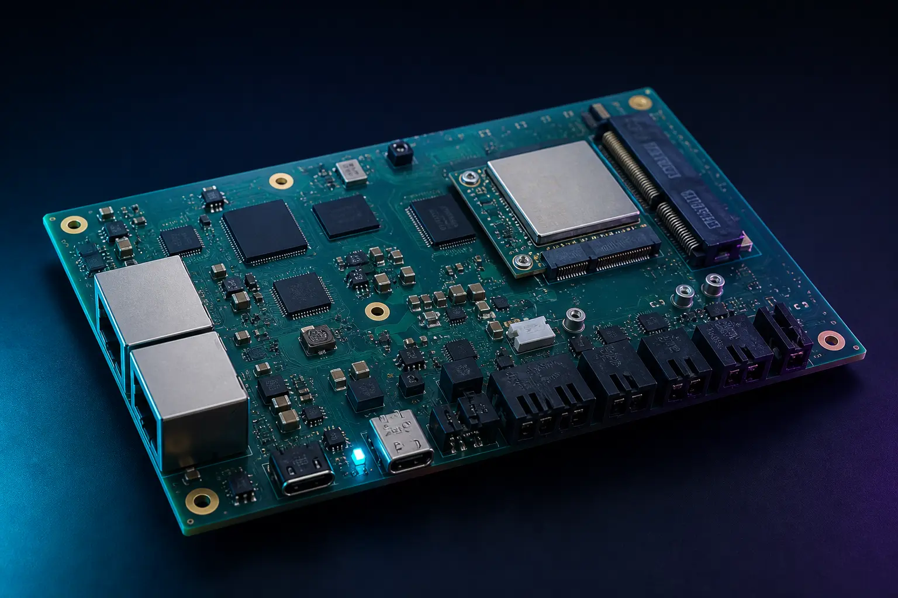

Compact voice and edge AI
Audio, local sensing and cellular expansion on a manufacturable compact platform.
Case study
Gateway engineering that accommodates changing LoRa, cellular and Wi-Fi technologies without forcing a complete board redesign.

Challenge
Incident and field communications requirements changed faster than a fixed single-radio board could follow. The programme needed dependable wired networking and the freedom to evaluate LoRa, cellular and Wi-Fi combinations as coverage, cost and regulation shifted—without restarting schematic, layout and certification from scratch each time.
Approach
Outcome
Communications options could be qualified and swapped while the compute platform, industrial interfaces and Linux maintenance path remained coherent. That shortened the loop between field learning and the next hardware iteration, and kept manufacturing conversation focused on a reusable gateway foundation.
Case studies
Audio, local sensing and cellular expansion on a manufacturable compact platform.
Controller and constrained sensor boards engineered as one data-acquisition system.
Your programme
Share backhaul, local-radio, power, enclosure and deployment constraints. We will qualify EDGE GATEWAY and the module set that fits.